🚀 Enhanced Multi-Timeframe Training Data Visualizations
📈 AAPL Visualizations
Comprehensive Dashboard
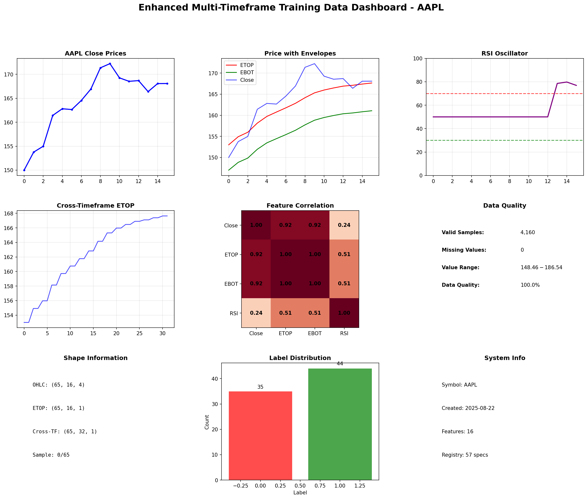
OHLC Candlestick
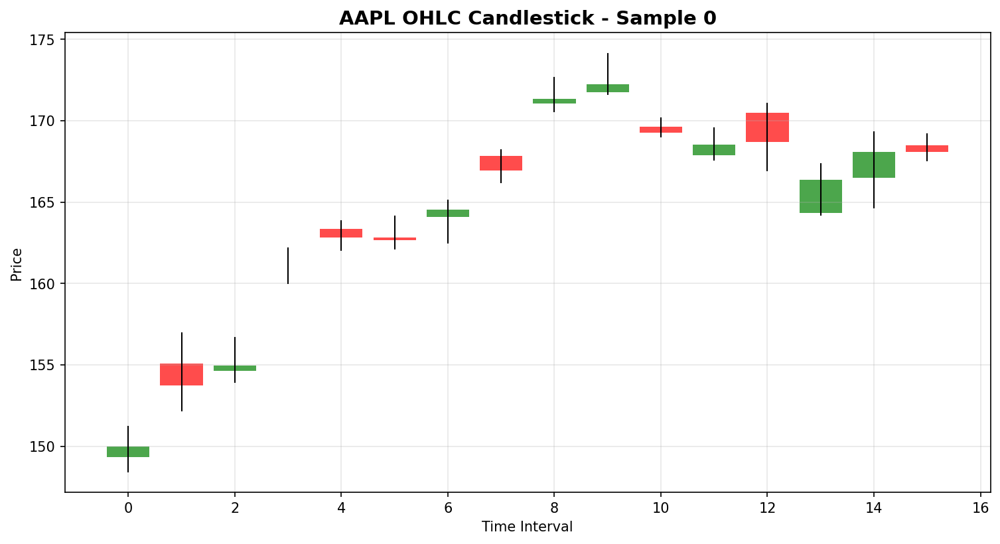
Technical Indicators
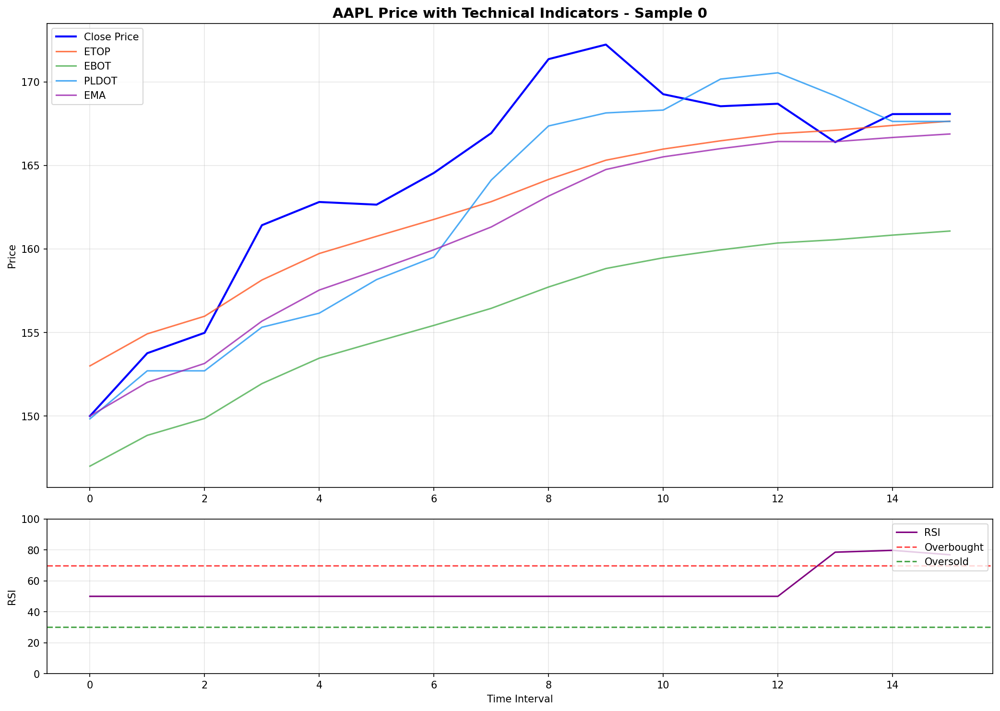
Cross-Timeframe Comparison
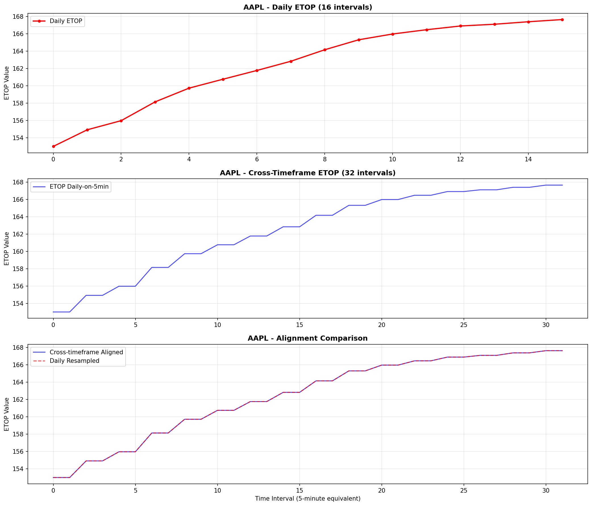
Feature Distributions
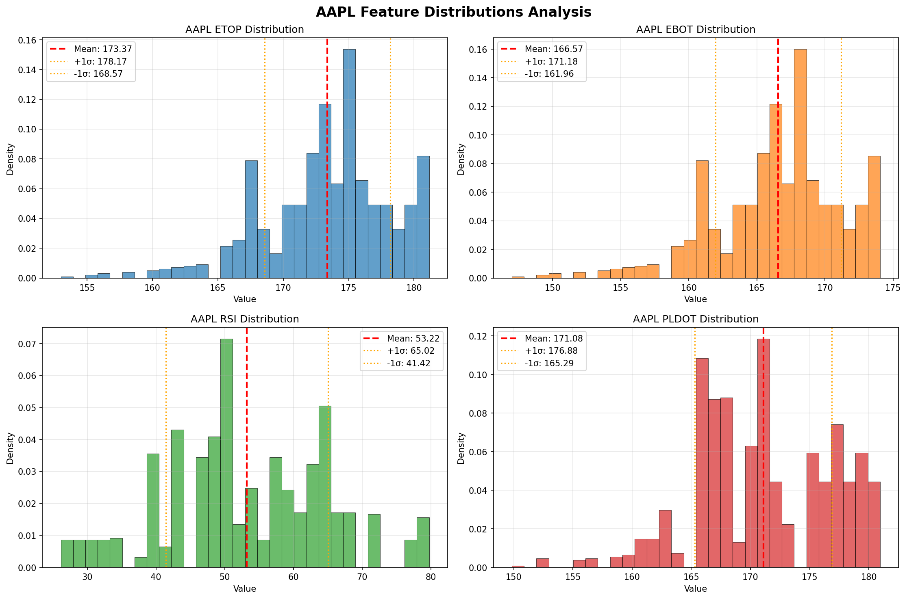
Sequence Heatmap
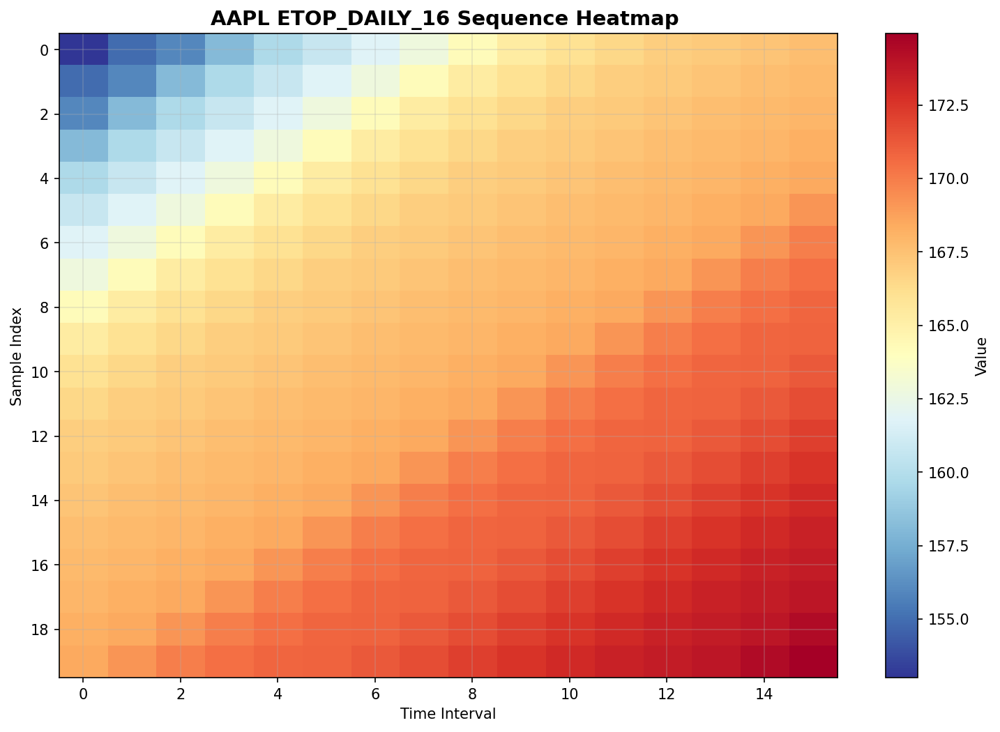
📈 TSLA Visualizations
Comprehensive Dashboard
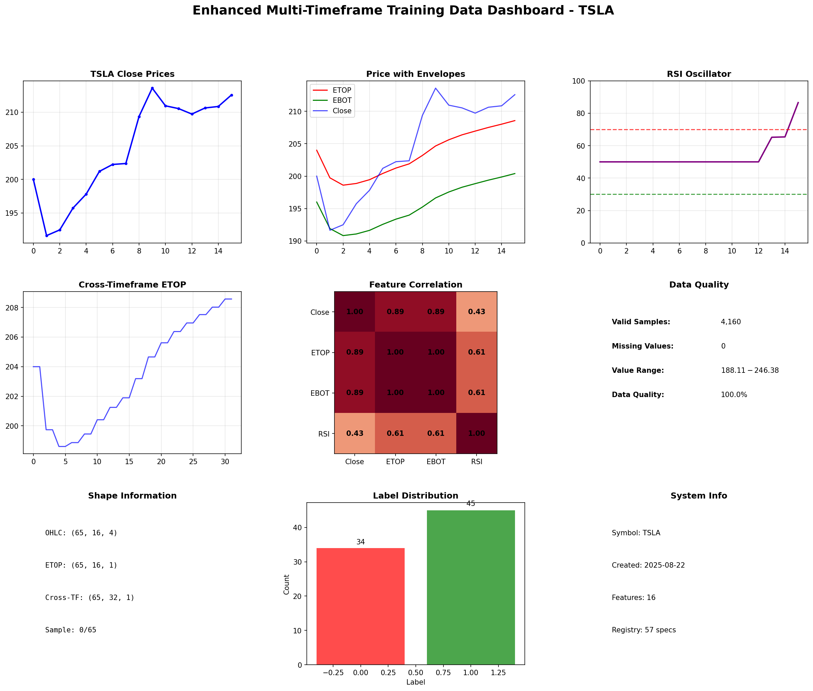
OHLC Candlestick
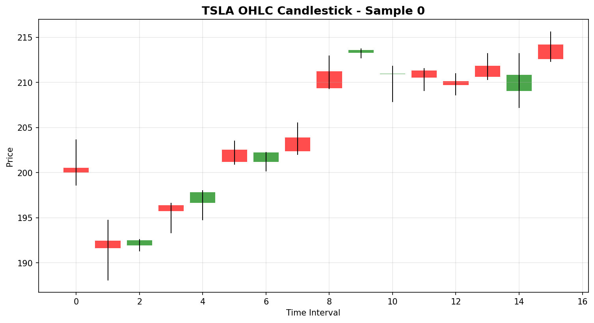
Technical Indicators
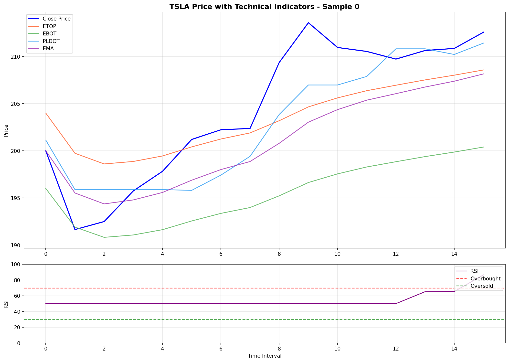
Cross-Timeframe Comparison
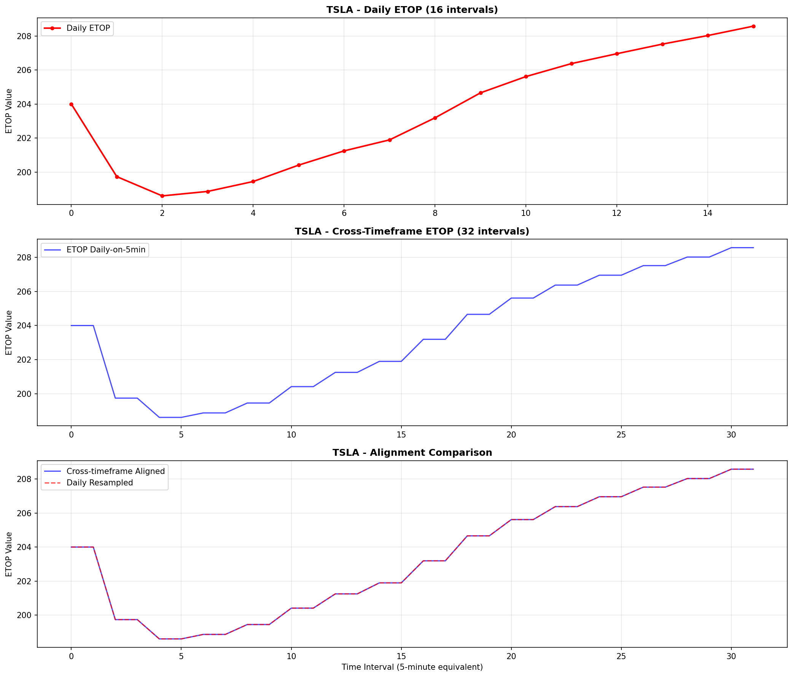
Feature Distributions
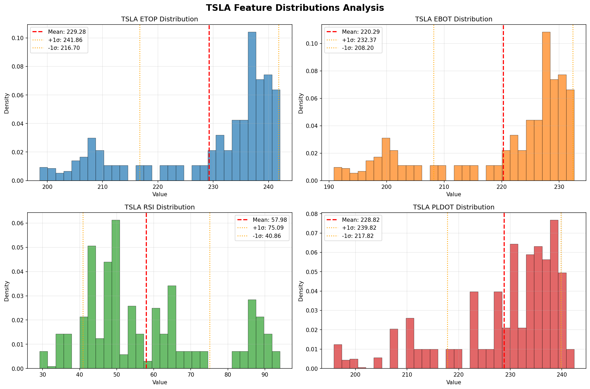
Sequence Heatmap
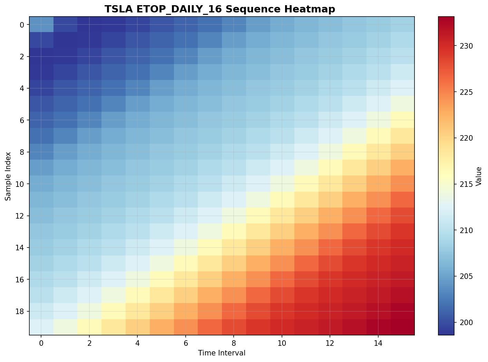